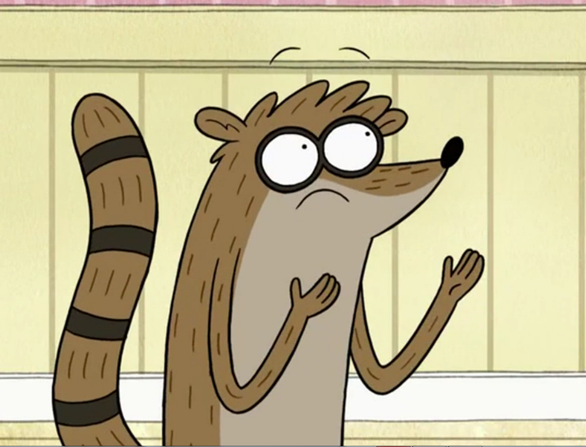

Rigby | rigbone@gmail.com | Phone: 555-555-REGS | 123 The Park

Objective
To obtain a position that combines my expertise in slacking off, causing chaos, and occasionally pulling off big wins. Seeking a role where my natural flair for mischief and creative problem-solving can be put to good use. Looking for a laid-back work environment with a team that understands the value of having fun while getting things done (sometimes).
Skills
- Mischief Management: Specializing in pranking coworkers, finding shortcuts to avoid work, and stirring up chaos.
- Team Dynamics (Sort Of): Occasionally contributing to team projects when absolutely necessary, but mostly just showing up and making things interesting.
- Problem Solving (When It Counts): Able to think outside the box and deliver when it’s the last possible minute.
- Technology Savvy (In My Own Way): Proficient with gaming systems, video games, and any technology that can aid in avoiding manual labor.
- Self-Motivation: Motivated to do as little work as possible while still remaining employed.
Experience
Groundskeeper (Part-Time) | The Park | 2009 - Present
- Worked alongside best friend Mordecai to maintain park facilities, though I was more focused on avoiding tasks than actual work.
- Assisted in various (questionable) park-related events, like dodgeball tournaments and wrestling matches.
- Occasionally saved the day (by accident) in times of park-wide disasters.
- Frequently challenged authority figures to games or pranks, only to win against impossible odds.
Self-Employed | 2008 - Present
- Expert in balancing work and relaxation, often developing elaborate schemes to extend break times.
- Negotiated multiple "extended lunch breaks" with Mordecai and other coworkers.
- Perfected the art of procrastination without getting caught (most of the time).
Education
High School Diploma from West Anderson High | 2016
Unofficial White Belt in Death-Kwon-Do
References
- Mordecai (Co-Worker/Best Friend): "Rigby? Yeah, he's good for well... sometimes he helps. He's a lot of work but, somehow, he gets the job done when the odds are stacked against us."
- Benson (Boss): "Rigby is a waste of time and resources. Do not hire him."
- Muscle Man (Co-Worker): "One time I dared Rigby to eat a rotten apple out of a dumpster and he totally did it! So he's pretty cool in my book."